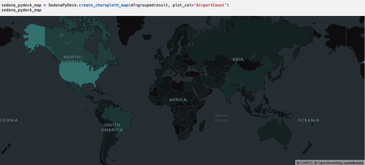
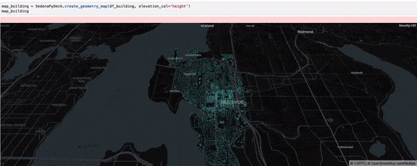
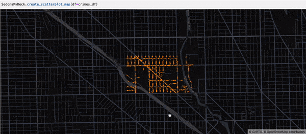
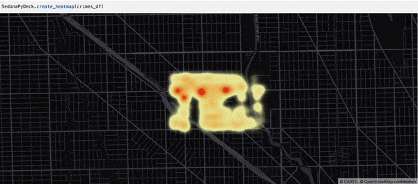
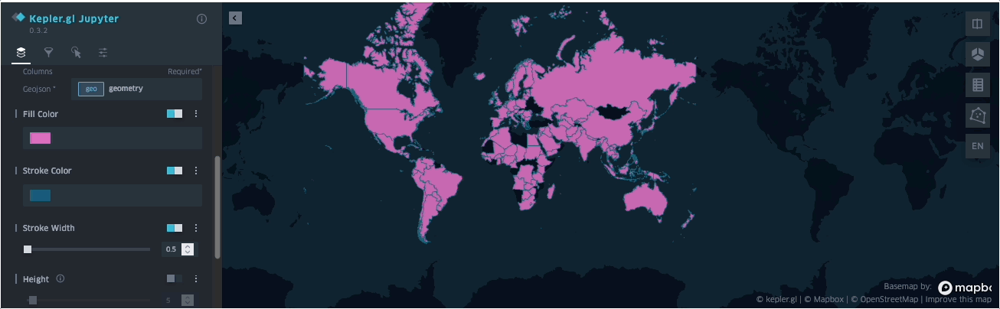

空间 DataFrame / SQL 应用
本页介绍如何使用 SedonaSQL 管理空间数据。
Note
Sedona 假定地理坐标按 lon/lat 顺序排列。如果您的数据是 lat/lon 顺序，请使用 ST_FlipCoordinates 交换 X 与 Y。
SedonaSQL 支持 SQL/MM Part3 空间 SQL 标准，提供四类 SQL 算子，所有算子都可以直接通过以下方式调用：
var myDataFrame = sedona.sql("YOUR_SQL")
myDataFrame.createOrReplaceTempView("spatialDf")
Dataset<Row> myDataFrame = sedona.sql("YOUR_SQL")
myDataFrame.createOrReplaceTempView("spatialDf")
myDataFrame = sedona.sql("YOUR_SQL")
myDataFrame.createOrReplaceTempView("spatialDf")
SedonaSQL 详细 API 说明请参阅 SedonaSQL API。示例 county 数据（即 county_small.tsv）可在 Sedona GitHub 仓库 找到。
配置依赖¶
- 阅读 Sedona Maven Central 坐标 并在 build.sbt 或 pom.xml 中添加 Sedona 依赖。
- 在 build.sbt 或 pom.xml 中添加 Apache Spark core 与 Apache SparkSQL 依赖。
- 参考 SQL 示例项目。
- 请阅读 快速开始 安装 Sedona Python。
- 本教程基于 Sedona SQL Jupyter Notebook 示例。
创建 Sedona 配置¶
在程序起始处使用以下代码创建 Sedona 配置。如果您已经有了由 AWS EMR / Databricks / Microsoft Fabric 创建的 SparkSession（通常名为 spark），请==跳过此步骤==。
可以在 builder 中追加额外的 Spark 运行时配置，例如 SedonaContext.builder().config("spark.sql.autoBroadcastJoinThreshold", "10485760")。
import org.apache.sedona.spark.SedonaContext
val config = SedonaContext.builder()
.master("local[*]") // 集群模式下请删除此行
.appName("readTestScala") // 改成合适的名字
.getOrCreate()
SedonaContext.builder() 之后追加以下行启用 Sedona Kryo 序列化器：
.config("spark.kryo.registrator", classOf[SedonaVizKryoRegistrator].getName) // org.apache.sedona.viz.core.Serde.SedonaVizKryoRegistrator
import org.apache.sedona.spark.SedonaContext;
SparkSession config = SedonaContext.builder()
.master("local[*]") // 集群模式下请删除此行
.appName("readTestJava") // 改成合适的名字
.getOrCreate()
SedonaContext.builder() 之后追加以下行启用 Sedona Kryo 序列化器：
.config("spark.kryo.registrator", SedonaVizKryoRegistrator.class.getName()) // org.apache.sedona.viz.core.Serde.SedonaVizKryoRegistrator
from sedona.spark import *
config = SedonaContext.builder() .\
config('spark.jars.packages',
'org.apache.sedona:sedona-spark-shaded-3.3_2.12:1.9.0,'
'org.datasyslab:geotools-wrapper:1.9.0-33.5'). \
getOrCreate()
3.3 替换为对应的 Spark major.minor 版本，例如 sedona-spark-shaded-3.4_2.12:1.9.0。
初始化 SedonaContext¶
在创建 Sedona 配置之后加上以下代码。如果您已经有了由 AWS EMR / Databricks / Microsoft Fabric 创建的 SparkSession（通常名为 spark），请改为调用 sedona = SedonaContext.create(spark)。
import org.apache.sedona.spark.SedonaContext
val sedona = SedonaContext.create(config)
import org.apache.sedona.spark.SedonaContext;
SparkSession sedona = SedonaContext.create(config)
from sedona.spark import *
sedona = SedonaContext.create(config)
也可以通过在 spark-submit 或 spark-shell 中传入 --conf spark.sql.extensions=org.apache.sedona.sql.SedonaSqlExtensions 完成注册。
从文本文件加载数据¶
假设有一个 WKT 文件 usa-county.tsv，路径为 /Download/usa-county.tsv，内容如下：
POLYGON (..., ...) Cuming County
POLYGON (..., ...) Wahkiakum County
POLYGON (..., ...) De Baca County
POLYGON (..., ...) Lancaster County
文件中可能还有许多其他列。
加载原始 DataFrame¶
使用以下代码加载数据并创建原始 DataFrame：
var rawDf = sedona.read.format("csv").option("delimiter", "\t").option("header", "false").load("/Download/usa-county.tsv")
rawDf.createOrReplaceTempView("rawdf")
rawDf.show()
Dataset<Row> rawDf = sedona.read.format("csv").option("delimiter", "\t").option("header", "false").load("/Download/usa-county.tsv")
rawDf.createOrReplaceTempView("rawdf")
rawDf.show()
rawDf = sedona.read.format("csv").option("delimiter", "\t").option("header", "false").load("/Download/usa-county.tsv")
rawDf.createOrReplaceTempView("rawdf")
rawDf.show()
输出大致如下：
| _c0|_c1|_c2| _c3| _c4| _c5| _c6|_c7|_c8| _c9|_c10| _c11|_c12|_c13| _c14| _c15| _c16| _c17|
+--------------------+---+---+--------+-----+-----------+--------------------+---+---+-----+----+-----+----+----+----------+--------+-----------+------------+
|POLYGON ((-97.019...| 31|039|00835841|31039| Cuming| Cuming County| 06| H1|G4020|null| null|null| A|1477895811|10447360|+41.9158651|-096.7885168|
|POLYGON ((-123.43...| 53|069|01513275|53069| Wahkiakum| Wahkiakum County| 06| H1|G4020|null| null|null| A| 682138871|61658258|+46.2946377|-123.4244583|
|POLYGON ((-104.56...| 35|011|00933054|35011| De Baca| De Baca County| 06| H1|G4020|null| null|null| A|6015539696|29159492|+34.3592729|-104.3686961|
|POLYGON ((-96.910...| 31|109|00835876|31109| Lancaster| Lancaster County| 06| H1|G4020| 339|30700|null| A|2169240202|22877180|+40.7835474|-096.6886584|
创建 Geometry 类型列¶
SedonaSQL 中所有几何运算都作用在 Geometry 类型对象上。因此在执行任何查询之前，需要在 DataFrame 上构造一列 Geometry 类型列。
SELECT ST_GeomFromWKT(_c0) AS countyshape, _c1, _c2
可以选取更多属性来组成这个 spatialdDf。输出大致如下：
| countyshape|_c1|_c2| _c3| _c4| _c5| _c6|_c7|_c8| _c9|_c10| _c11|_c12|_c13| _c14| _c15| _c16| _c17|
+--------------------+---+---+--------+-----+-----------+--------------------+---+---+-----+----+-----+----+----+----------+--------+-----------+------------+
|POLYGON ((-97.019...| 31|039|00835841|31039| Cuming| Cuming County| 06| H1|G4020|null| null|null| A|1477895811|10447360|+41.9158651|-096.7885168|
|POLYGON ((-123.43...| 53|069|01513275|53069| Wahkiakum| Wahkiakum County| 06| H1|G4020|null| null|null| A| 682138871|61658258|+46.2946377|-123.4244583|
|POLYGON ((-104.56...| 35|011|00933054|35011| De Baca| De Baca County| 06| H1|G4020|null| null|null| A|6015539696|29159492|+34.3592729|-104.3686961|
|POLYGON ((-96.910...| 31|109|00835876|31109| Lancaster| Lancaster County| 06| H1|G4020| 339|30700|null| A|2169240202|22877180|+40.7835474|-096.6886584|
虽然外观与输入一致，但 countyshape 列的类型已经变为 Geometry。
可以通过打印 schema 进行验证：
spatialDf.printSchema()
输出如下：
root
|-- countyshape: geometry (nullable = false)
|-- _c1: string (nullable = true)
|-- _c2: string (nullable = true)
|-- _c3: string (nullable = true)
|-- _c4: string (nullable = true)
|-- _c5: string (nullable = true)
|-- _c6: string (nullable = true)
|-- _c7: string (nullable = true)
Note
SedonaSQL 提供了大量构造 Geometry 列的函数，详见 SedonaSQL 构造器 API。
加载 GeoJSON 数据¶
自 v1.6.1 起，Sedona 支持通过 geojson 数据源读取 GeoJSON 文件。它专门用于处理几何对象采用 GeoJSON 格式 的 JSON 文件。
读取多行 GeoJSON 文件请将 multiLine 选项设为 True。
df = (
sedona.read.format("geojson")
.option("multiLine", "true")
.load("PATH/TO/MYFILE.json")
.selectExpr("explode(features) as features") # 展开 envelope
.select("features.*") # 解包 features 结构体
.withColumn("prop0", f.expr("properties['prop0']"))
.drop("properties")
.drop("type")
)
df.show()
df.printSchema()
val df = sedona.read.format("geojson").option("multiLine", "true").load("PATH/TO/MYFILE.json")
val parsedDf = df.selectExpr("explode(features) as features").select("features.*")
.withColumn("prop0", expr("properties['prop0']")).drop("properties").drop("type")
parsedDf.show()
parsedDf.printSchema()
Dataset<Row> df = sedona.read.format("geojson").option("multiLine", "true").load("PATH/TO/MYFILE.json")
.selectExpr("explode(features) as features") // 展开 envelope，每行一个 feature
.select("features.*") // 解包 features 结构体
.withColumn("prop0", expr("properties['prop0']")).drop("properties").drop("type")
df.show();
df.printSchema();
加载 GeoJSON 文件的更多信息请参阅 此页。
加载 Shapefile¶
自 v1.7.0 起，Sedona 支持把 Shapefile 加载为 DataFrame。
val df = sedona.read.format("shapefile").load("/path/to/shapefile")
Dataset<Row> df = sedona.read().format("shapefile").load("/path/to/shapefile")
df = sedona.read.format("shapefile").load("/path/to/shapefile")
输入路径既可以是包含一个或多个 Shapefile 的目录，也可以是 .shp 文件本身。
加载 Shapefile 的更多信息请参阅 此页。
加载 GeoParquet¶
自 v1.3.0 起，Sedona 原生支持加载 GeoParquet 文件。Sedona 会通过 GeoParquet 文件中的 “geo” 元数据推断几何字段。
val df = sedona.read.format("geoparquet").load(geoparquetdatalocation1)
df.printSchema()
Dataset<Row> df = sedona.read.format("geoparquet").load(geoparquetdatalocation1)
df.printSchema()
df = sedona.read.format("geoparquet").load(geoparquetdatalocation1)
df.printSchema()
输出如下：
root
|-- pop_est: long (nullable = true)
|-- continent: string (nullable = true)
|-- name: string (nullable = true)
|-- iso_a3: string (nullable = true)
|-- gdp_md_est: double (nullable = true)
|-- geometry: geometry (nullable = true)
Sedona 支持 GeoParquet 文件的空间谓词下推，详见 SedonaSQL 查询优化器 文档。
GeoParquet 文件读取器也可用于读取 Apache Sedona 1.3.1-incubating 及更早版本写出的旧版 Parquet 文件，详见 读取旧版 Parquet 文件。
加载 GeoParquet 的更多信息请参阅 此页。
从 STAC catalog 加载数据¶
Sedona 的 STAC 数据源允许从 SpatioTemporal Asset Catalog（STAC）API 读取数据，支持读取 STAC items 与 collections。
可以从 S3 上的 collection 文件加载 STAC collection：
df = sedona.read.format("stac").load(
"s3a://example.com/stac_bucket/stac_collection.json"
)
也可以从 HTTP/HTTPS 端点加载：
df = sedona.read.format("stac").load(
"https://earth-search.aws.element84.com/v1/collections/sentinel-2-pre-c1-l2a"
)
STAC 数据源支持空间和时间过滤的下推，可以将这些过滤直接下推到底层数据源以减少需要读取的数据量。
加载 STAC 数据的更多信息请参阅 此页。
从 JDBC 数据源加载数据¶
可以使用 Spark SQL JDBC 数据源的 'query' 选项把几何列转换成 Sedona 能识别的格式。该方式适用于大多数支持空间的 JDBC 数据源。Postgis 由于使用 EWKB 作为其传输格式，无需添加查询进行类型转换。
// 适用于任意 JDBC 数据源（包括 Postgis）
val df = sedona.read.format("jdbc")
// 其他选项
.option("query", "SELECT id, ST_AsBinary(geom) as geom FROM my_table")
.load()
.withColumn("geom", expr("ST_GeomFromWKB(geom)"))
// Postgis 上的简化写法
val df = sedona.read.format("jdbc")
// 其他选项
.option("dbtable", "my_table")
.load()
.withColumn("geom", expr("ST_GeomFromWKB(geom)"))
// 适用于任意 JDBC 数据源（包括 Postgis）
Dataset<Row> df = sedona.read().format("jdbc")
// 其他选项
.option("query", "SELECT id, ST_AsBinary(geom) as geom FROM my_table")
.load()
.withColumn("geom", expr("ST_GeomFromWKB(geom)"))
// Postgis 上的简化写法
Dataset<Row> df = sedona.read().format("jdbc")
// 其他选项
.option("dbtable", "my_table")
.load()
.withColumn("geom", expr("ST_GeomFromWKB(geom)"))
# 适用于任意 JDBC 数据源（包括 Postgis）
df = (sedona.read.format("jdbc")
# 其他选项
.option("query", "SELECT id, ST_AsBinary(geom) as geom FROM my_table")
.load()
.withColumn("geom", f.expr("ST_GeomFromWKB(geom)")))
# Postgis 上的简化写法
df = (sedona.read.format("jdbc")
# 其他选项
.option("dbtable", "my_table")
.load()
.withColumn("geom", f.expr("ST_GeomFromWKB(geom)")))
加载 GeoPackage¶
自 v1.7.0 起，Sedona 支持把 GeoPackage 文件加载为 DataFrame。
val df = sedona.read.format("geopackage").option("tableName", "tab").load("/path/to/geopackage")
Dataset<Row> df = sedona.read().format("geopackage").option("tableName", "tab").load("/path/to/geopackage")
df = sedona.read.format("geopackage").option("tableName", "tab").load("/path/to/geopackage")
加载 GeoPackage 的更多信息请参阅 此页。
加载 OSM PBF¶
自 v1.7.1 起，Sedona 支持把 OSM PBF 文件加载为 DataFrame。
val df = sedona.read.format("osmpbf").load("/path/to/osmpbf")
Dataset<Row> df = sedona.read().format("osmpbf").load("/path/to/osmpbf")
df = sedona.read.format("osmpbf").load("/path/to/osmpbf")
OSM PBF 文件可以包含 nodes、ways 与 relations。Sedona 目前支持 Nodes、DenseNodes、Ways 与 Relations。加载后的 DataFrame schema 如下：
root
|-- id: long (nullable = true)
|-- kind: string (nullable = true)
|-- location: struct (nullable = true)
| |-- longitude: double (nullable = true)
| |-- latitude: double (nullable = true)
|-- tags: map (nullable = true)
| |-- key: string
| |-- value: string (valueContainsNull = true)
|-- refs: array (nullable = true)
| |-- element: long (containsNull = true)
|-- ref_roles: array (nullable = true)
| |-- element: string (containsNull = true)
|-- ref_types: array (nullable = true)
| |-- element: string (containsNull = true)
各字段含义：
id：对象的唯一标识。kind：对象类型，可能为node、way或relation。location：对象的位置，包含longitude与latitude。tags：键值对的 map，表示对象的 tags。refs：对象引用的数组。ref_roles：引用对应的角色数组。ref_types：引用对应的类型数组。
nodes 的 DataFrame 大致如下：
+---------+----+--------------------+--------------------+----+---------+---------+
| id|kind| location| tags|refs|ref_roles|ref_types|
+---------+----+--------------------+--------------------+----+---------+---------+
|248675410|node|{21.0884952545166...|{tactile_paving -...|NULL| NULL| NULL|
|260821820|node|{21.0191555023193...|{created_by -> JOSM}|NULL| NULL| NULL|
|349189665|node|{22.1437530517578...|{source -> http:/...|NULL| NULL| NULL|
|353366899|node|{22.9787712097167...|{source -> http:/...|NULL| NULL| NULL|
|359460224|node|{22.4816703796386...|{source -> http:/...|NULL| NULL| NULL|
+---------+----+--------------------+--------------------+----+---------+---------+
only showing top 5 rows
ways 的大致样子：
+-------+----+--------+--------------------+--------------------+---------+---------+
| id|kind|location| tags| refs|ref_roles|ref_types|
+-------+----+--------+--------------------+--------------------+---------+---------+
|4307329| way| NULL|{junction -> roun...|[2448759046, 7093...| NULL| NULL|
|4307330| way| NULL|{surface -> aspha...|[26063923, 260639...| NULL| NULL|
|4308966| way| NULL|{sidewalk -> sepa...|[3387797238, 9252...| NULL| NULL|
|4308968| way| NULL|{surface -> pavin...|[26083890, 744724...| NULL| NULL|
|4308969| way| NULL|{cycleway:both ->...|[9526831176, 1218...| NULL| NULL|
+-------+----+--------+--------------------+--------------------+---------+---------+
relations 的大致样子：
+-----+--------+--------+--------------------+--------------------+--------------------+--------------------+
| id| kind|location| tags| refs| ref_roles| ref_types|
+-----+--------+--------+--------------------+--------------------+--------------------+--------------------+
|28124|relation| NULL|{official_name ->...|[26382394, 26259985]| [inner, outer]| [WAY, WAY]|
|28488|relation| NULL| {type -> junction}|[26409253, 303249...|[roundabout, roun...|[WAY, WAY, WAY, WAY]|
|32939|relation| NULL|{ref -> E 67, rou...|[140673970, 14067...| [, , , , , ]|[WAY, WAY, RELATI...|
|34387|relation| NULL|{note -> rząd III...|[209161000, 52154...|[main_stream, mai...|[WAY, WAY, WAY, W...|
|34392|relation| NULL|{distance -> 1047...|[150033976, 25076...|[main_stream, mai...|[WAY, WAY, WAY, W...|
+-----+--------+--------+--------------------+--------------------+--------------------+--------------------+
转换坐标参考系¶
Sedona 不会自动管理一列 Geometry 中所有几何对象的坐标单位（基于度还是基于米）。SedonaSQL 中所有相关距离的单位与 Geometry 列中几何对象的单位保持一致。
自 v1.5.0 起，该函数默认使用 lon/lat 顺序（之前为 lat/lon 顺序）。可以使用 ST_FlipCoordinates 交换 X 与 Y。
更多细节请参阅 Sedona API 参考中的 ST_Transform 章节。
转换前述 Geometry 列的坐标参考系：
SELECT ST_Transform(countyshape, "epsg:4326", "epsg:3857") AS newcountyshape, _c1, _c2, _c3, _c4, _c5, _c6, _c7
FROM spatialdf
ST_Transform 第一个 EPSG 代码 EPSG:4326 是源 CRS——也就是最常见的基于度的 CRS（WGS84）。
第二个 EPSG 代码 EPSG:3857 是目标 CRS——最常见的基于米的 CRS。
ST_Transform 会把这些几何对象的 CRS 从 EPSG:4326 转换到 EPSG:3857。详细 CRS 信息可在 EPSG.io 找到。
多边形坐标已发生变化。输出大致如下：
+--------------------+---+---+--------+-----+-----------+--------------------+---+
| newcountyshape|_c1|_c2| _c3| _c4| _c5| _c6|_c7|
+--------------------+---+---+--------+-----+-----------+--------------------+---+
|POLYGON ((-108001...| 31|039|00835841|31039| Cuming| Cuming County| 06|
|POLYGON ((-137408...| 53|069|01513275|53069| Wahkiakum| Wahkiakum County| 06|
|POLYGON ((-116403...| 35|011|00933054|35011| De Baca| De Baca County| 06|
|POLYGON ((-107880...| 31|109|00835876|31109| Lancaster| Lancaster County| 06|
使用 DBSCAN 进行聚类¶
Sedona 提供 DBSCAN 算法的实现，用于对空间数据进行聚类。
该算法以 Scala 与 Python 函数的形式提供，作用在空间 DataFrame 上。返回的 DataFrame 中会增加两列：所属簇的唯一标识，以及一个表示该记录是否为核心点的布尔列。
第一个参数是 DataFrame，后两个是 DBSCAN 的 epsilon 与 min_points 参数。
import org.apache.sedona.stats.clustering.DBSCAN.dbscan
dbscan(df, 0.1, 5).show()
import org.apache.sedona.stats.clustering.DBSCAN;
DBSCAN.dbscan(df, 0.1, 5).show();
from sedona.spark.stats import dbscan
dbscan(df, 0.1, 5).show()
输出大致如下：
+----------------+---+------+-------+
| geometry| id|isCore|cluster|
+----------------+---+------+-------+
| POINT (2.5 4)| 3| false| 1|
| POINT (3 4)| 2| false| 1|
| POINT (3 5)| 5| false| 1|
| POINT (1 3)| 9| true| 0|
| POINT (2.5 4.5)| 7| true| 1|
| POINT (1 2)| 1| true| 0|
| POINT (1.5 2.5)| 4| true| 0|
| POINT (1.2 2.5)| 8| true| 0|
| POINT (1 2.5)| 11| true| 0|
| POINT (1 5)| 10| false| -1|
| POINT (5 6)| 12| false| -1|
|POINT (12.8 4.5)| 6| false| -1|
| POINT (4 3)| 13| false| -1|
+----------------+---+------+-------+
DBSCAN 算法的更多内容请参阅 此页。
计算 Local Outlier Factor（LOF）¶
Sedona 提供 Local Outlier Factor 算法的实现，用于识别空间数据中的异常点。
该算法以 Scala 与 Python 函数的形式提供，作用在空间 DataFrame 上。返回的 DataFrame 中会增加一列保存 local outlier factor。
第一个参数是 DataFrame，第二个参数是计算评分时考虑的最近邻数量。
import org.apache.sedona.stats.outlierDetection.LocalOutlierFactor.localOutlierFactor
localOutlierFactor(df, 20).show()
import org.apache.sedona.stats.outlierDetection.LocalOutlierFactor;
LocalOutlierFactor.localOutlierFactor(df, 20).show();
from sedona.spark.stats import local_outlier_factor
local_outlier_factor(df, 20).show()
输出大致如下：
+--------------------+------------------+
| geometry| lof|
+--------------------+------------------+
|POINT (-2.0231305...| 0.952098153363662|
|POINT (-2.0346944...|0.9975325496668104|
|POINT (-2.2040074...|1.0825843906411081|
|POINT (1.61573501...|1.7367129352162634|
|POINT (-2.1176324...|1.5714144683150393|
|POINT (-2.2349759...|0.9167275845938276|
|POINT (1.65470192...| 1.046231536764447|
|POINT (0.62624112...|1.1988700676990034|
|POINT (2.01746261...|1.1060219481067417|
|POINT (-2.0483857...|1.0775553430145446|
|POINT (2.43969463...|1.1129132178576646|
|POINT (-2.2425480...| 1.104108012697006|
|POINT (-2.7859235...| 2.86371824574529|
|POINT (-1.9738858...|1.0398822680356794|
|POINT (2.00153403...| 0.927409656346015|
|POINT (2.06422812...|0.9222203762264445|
|POINT (-1.7533819...|1.0273650471626696|
|POINT (-2.2030766...| 0.964744555830738|
|POINT (-1.8509857...|1.0375927869698574|
|POINT (2.10849080...|1.0753419197322656|
+--------------------+------------------+
执行 Getis-Ord Gi(*) 热点分析¶
Sedona 提供 Gi 与 Gi* 算法的实现，用于识别空间数据中的局部热点。
该算法以 Scala 与 Python 函数的形式提供，作用在空间 DataFrame 上。返回的 DataFrame 中会增加 G 统计量、E[G]、V[G]、Z 分数与 p 值等列。
使用 Gi 时，先为每条记录生成邻居列表，再调用 g_local 函数。
import org.apache.sedona.stats.Weighting.addBinaryDistanceBandColumn
import org.apache.sedona.stats.hotspotDetection.GetisOrd.gLocal
val distanceRadius = 1.0
val weightedDf = addBinaryDistanceBandColumn(df, distanceRadius)
gLocal(weightedDf, "val").show()
import org.apache.sedona.stats.Weighting;
import org.apache.sedona.stats.hotspotDetection.GetisOrd;
import org.apache.spark.sql.DataFrame;
double distanceRadius = 1.0;
DataFrame weightedDf = Weighting.addBinaryDistanceBandColumn(df, distanceRadius);
GetisOrd.gLocal(weightedDf, "val").show();
from sedona.spark.stats import add_binary_distance_band_column
from sedona.spark.stats import g_local
distance_radius = 1.0
weighted_df = addBinaryDistanceBandColumn(df, distance_radius)
g_local(weightedDf, "val").show()
输出大致如下：
+-----------+---+--------------------+-------------------+-------------------+--------------------+--------------------+--------------------+
| geometry|val| weights| G| EG| VG| Z| P|
+-----------+---+--------------------+-------------------+-------------------+--------------------+--------------------+--------------------+
|POINT (2 2)|0.9|[{{POINT (2 3), 1...| 0.4488188976377953|0.45454545454545453| 0.00356321373799772|-0.09593402008347063| 0.4617864875295957|
|POINT (2 3)|1.2|[{{POINT (2 2), 0...|0.35433070866141736|0.36363636363636365|0.003325666155464539|-0.16136436037034918| 0.4359032175415549|
|POINT (3 3)|1.2|[{{POINT (2 3), 1...|0.28346456692913385| 0.2727272727272727|0.002850570990398176| 0.20110780337013057| 0.42030714022155924|
|POINT (3 2)|1.2|[{{POINT (2 2), 0...| 0.4488188976377953|0.45454545454545453| 0.00356321373799772|-0.09593402008347063| 0.4617864875295957|
|POINT (3 1)|1.2|[{{POINT (3 2), 3...| 0.3622047244094489| 0.2727272727272727|0.002850570990398176| 1.6758983614177538| 0.04687905137429871|
|POINT (2 1)|2.2|[{{POINT (2 2), 0...| 0.4330708661417323|0.36363636363636365|0.003325666155464539| 1.2040263812249166| 0.11428969105925013|
|POINT (1 1)|1.2|[{{POINT (2 1), 5...| 0.2834645669291339| 0.2727272727272727|0.002850570990398176| 0.2011078033701316| 0.4203071402215588|
|POINT (1 2)|0.2|[{{POINT (2 2), 0...|0.35433070866141736|0.45454545454545453| 0.00356321373799772| -1.67884535146075|0.046591093685710794|
|POINT (1 3)|1.2|[{{POINT (2 3), 1...| 0.2047244094488189| 0.2727272727272727|0.002850570990398176| -1.2736827546774914| 0.10138793530151635|
|POINT (0 2)|1.0|[{{POINT (1 2), 7...|0.09448818897637795|0.18181818181818182|0.002137928242798632| -1.8887168824332323|0.029464887612748458|
|POINT (4 2)|1.2|[{{POINT (3 2), 3...| 0.1889763779527559|0.18181818181818182|0.002137928242798632| 0.15481285921583854| 0.43848442662481324|
+-----------+---+--------------------+-------------------+-------------------+--------------------+--------------------+--------------------+
执行空间查询¶
构造完 Geometry 类型列后，即可执行各类空间查询。
范围查询¶
使用 ST_Contains、ST_Intersects、ST_Within 在单列上执行范围查询。
下例查找位于给定多边形内的所有 county：
SELECT *
FROM spatialdf
WHERE ST_Contains (ST_PolygonFromEnvelope(1.0,100.0,1000.0,1100.0), newcountyshape)
Note
了解如何创建 Geometry 类型的查询窗口请参阅 SedonaSQL 构造器 API。
KNN 查询¶
使用 ST_Distance 计算距离并排序。
下面的代码返回距离给定多边形最近的 5 个对象：
SELECT countyname, ST_Distance(ST_PolygonFromEnvelope(1.0,100.0,1000.0,1100.0), newcountyshape) AS distance
FROM spatialdf
ORDER BY distance DESC
LIMIT 5
连接查询¶
连接查询的细节请参阅 Join query。
KNN 连接查询¶
KNN 连接查询的细节请参阅 KNN join query。
其他查询¶
还有许多函数可以与上述查询组合使用，详见 SedonaSQL 函数 与 SedonaSQL 聚合函数。
可视化查询结果¶
Sedona 提供 SedonaPyDeck 与 SedonaKepler 两种封装，都提供了在 Jupyter 环境中基于 SedonaDataFrame 创建交互式地图可视化的 API。
Note
SedonaPyDeck 与 SedonaKepler 默认要求几何对象按 lon-lat 顺序排列。如果您的 DataFrame 是 lat-lon 顺序，请使用 ST_FlipCoordinates。
Note
SedonaPyDeck 与 SedonaKepler 设计上仅处理只含 1 个几何列的 SedonaDataFrame，传入包含多个几何列的 DataFrame 会出错。
SedonaPyDeck¶
可在 Jupyter Lab/Notebook 中通过 SedonaPyDeck 可视化空间查询结果。
SedonaPyDeck 基于 pydeck（构建于 deck.gl 之上）提供创建交互式地图的 API。
Note
使用 SedonaPyDeck 需要安装 sedona 的 pydeck-map 附加项：
pip install apache-sedona[pydeck-map]
下面的教程展示了 SedonaPyDeck 可创建的多种地图，所用数据集均为公开数据。
每个 SedonaPyDeck API 都通过可选参数提供定制能力，所有可用参数详见 SedonaPyDeck API 文档。
使用 SedonaPyDeck 创建 Choropleth 地图¶
SedonaPyDeck 的 create_choropleth_map API 可基于包含多边形与观测值的 SedonaDataFrame 创建 choropleth 地图：
示例：
SedonaPyDeck.create_choropleth_map(df=groupedresult, plot_col="AirportCount")
Note
plot_col 是必填参数，用于告诉 SedonaPyDeck 渲染 choropleth 时使用哪一列。

使用 SedonaPyDeck 创建 Geometry 地图¶
SedonaPyDeck 的 create_geometry_map API 可可视化任意类型几何对象的 SedonaDataFrame：
示例：
SedonaPyDeck.create_geometry_map(df_building, elevation_col="height")

Tip
elevation_col 是可选参数，用于渲染 3D 地图。请把对应几何对象 “高度” 信息所在的列名传入此参数。
使用 SedonaPyDeck 创建 Scatterplot 地图¶
SedonaPyDeck 的 create_scatterplot_map API 可基于包含点的 SedonaDataFrame 创建散点地图：
示例：
SedonaPyDeck.create_scatterplot_map(df=crimes_df)

所用的是 Chicago crimes 数据集，见 此处。
使用 SedonaPyDeck 创建热力图¶
SedonaPyDeck 的 create_heatmap API 可基于包含点的 SedonaDataFrame 创建热力图：
示例：
SedonaPyDeck.create_heatmap(df=crimes_df)

所用同样是 Chicago crimes 数据集，见 此处。
SedonaKepler¶
可在 Jupyter Lab/Notebook 中通过 SedonaKepler 可视化空间查询结果。
SedonaKepler 提供基于 KeplerGl 的交互式、可定制地图可视化 API。
Note
使用 SedonaKepler 需要安装 sedona 的 kepler-map 附加项：
pip install apache-sedona[kepler-map]
下面演示如何使用 SedonaKepler 立即可视化地理空间数据。
示例（取自 binder 提供的示例 notebook）：
SedonaKepler.create_map(df=groupedresult, name="AirportCount")

SedonaKepler 提供的所有 API 详见 SedonaKepler API 文档。
创建用户自定义函数（UDF）¶
用户自定义函数（UDF）是用户编写的函数，可以对单行数据执行操作。为了覆盖几乎所有的使用场景，下面给出 4 种不同形式的 UDF 示例，演示如何在 UDF 中使用几何对象。Sedona 的序列化器会把 SQL 几何类型反序列化为 JTS Geometry（Scala/Java）或 Shapely Geometry（Python），可以充分利用这两个生态实现自定义逻辑。
Geometry 转 primitive¶
下例 UDF 接收 Geometry 类型输入，返回基本类型输出：
import org.locationtech.jts.geom.Geometry
import org.apache.spark.sql.types._
def lengthPoly(geom: Geometry): Double = {
geom.getLength
}
sedona.udf.register("udf_lengthPoly", lengthPoly _)
df.selectExpr("udf_lengthPoly(geom)").show()
import org.apache.spark.sql.api.java.UDF1;
import org.apache.spark.sql.types.DataTypes;
// 使用 lambda 注册 UDF
sparkSession.udf().register(
"udf_lengthPoly",
(UDF1<Geometry, Double>) Geometry::getLength,
DataTypes.DoubleType);
df.selectExpr("udf_lengthPoly(geom)").show()
from sedona.spark.sql.types import GeometryType
from pyspark.sql.types import DoubleType
def lengthPoly(geom: GeometryType()):
return geom.length
sedona.udf.register("udf_lengthPoly", lengthPoly, DoubleType())
df.selectExpr("udf_lengthPoly(geom)").show()
输出：
+--------------------+
|udf_lengthPoly(geom)|
+--------------------+
| 3.414213562373095|
+--------------------+
Geometry 转 Geometry¶
下例 UDF 接收 Geometry 类型输入，返回 Geometry 类型输出：
import org.locationtech.jts.geom.Geometry
import org.apache.spark.sql.types._
def bufferFixed(geom: Geometry): Geometry = {
geom.buffer(5.5)
}
sedona.udf.register("udf_bufferFixed", bufferFixed _)
df.selectExpr("udf_bufferFixed(geom)").show()
import org.apache.spark.sql.api.java.UDF1;
import org.apache.spark.sql.types.DataTypes;
// 使用 lambda 注册 UDF
sparkSession.udf().register(
"udf_bufferFixed",
(UDF1<Geometry, Geometry>) geom ->
geom.buffer(5.5),
new GeometryUDT());
df.selectExpr("udf_bufferFixed(geom)").show()
from sedona.spark import GeometryType
from pyspark.sql.types import DoubleType
def bufferFixed(geom: GeometryType()):
return geom.buffer(5.5)
sedona.udf.register("udf_bufferFixed", bufferFixed, GeometryType())
df.selectExpr("udf_bufferFixed(geom)").show()
输出：
+--------------------------------------------------+
| udf_bufferFixed(geom)|
+--------------------------------------------------+
|POLYGON ((1 -4.5, -0.0729967710887076 -4.394319...|
+--------------------------------------------------+
Geometry + primitive 转 Geometry¶
下例 UDF 接收 Geometry 与基本类型两个输入，返回 Geometry 输出：
import org.locationtech.jts.geom.Geometry
import org.apache.spark.sql.types._
def bufferIt(geom: Geometry, distance: Double): Geometry = {
geom.buffer(distance)
}
sedona.udf.register("udf_buffer", bufferIt _)
df.selectExpr("udf_buffer(geom, distance)").show()
import org.apache.spark.sql.api.java.UDF2;
import org.apache.spark.sql.types.DataTypes;
// 使用 lambda 注册 UDF
sparkSession.udf().register(
"udf_buffer",
(UDF2<Geometry, Double, Geometry>) Geometry::buffer,
new GeometryUDT());
df.selectExpr("udf_buffer(geom, distance)").show()
from sedona.spark import GeometryType
from pyspark.sql.types import DoubleType
def bufferIt(geom: GeometryType(), distance: DoubleType()):
return geom.buffer(distance)
sedona.udf.register("udf_buffer", bufferIt, GeometryType())
df.selectExpr("udf_buffer(geom, distance)").show()
输出：
+--------------------------------------------------+
| udf_buffer(geom, distance)|
+--------------------------------------------------+
|POLYGON ((1 -9, -0.9509032201612866 -8.80785280...|
+--------------------------------------------------+
Geometry + primitive 转 Geometry + primitive¶
下例 UDF 接收 Geometry 与基本类型两个输入，同时返回 Geometry 与基本类型两个输出：
import org.locationtech.jts.geom.Geometry
import org.apache.spark.sql.types._
import org.apache.spark.sql.api.java.UDF2
val schemaUDF = StructType(Array(
StructField("buffed", GeometryUDT),
StructField("length", DoubleType)
))
val udf_bufferLength = udf(
new UDF2[Geometry, Double, (Geometry, Double)] {
def call(geom: Geometry, distance: Double): (Geometry, Double) = {
val buffed = geom.buffer(distance)
val length = geom.getLength
(buffed, length)
}
}, schemaUDF)
sedona.udf.register("udf_bufferLength", udf_bufferLength)
data.withColumn("bufferLength", expr("udf_bufferLengths(geom, distance)"))
.select("geom", "distance", "bufferLength.*")
.show()
import org.apache.spark.sql.api.java.UDF2;
import org.apache.spark.sql.types.DataTypes;
import org.apache.spark.sql.types.StructType;
import scala.Tuple2;
StructType schemaUDF = new StructType()
.add("buffedGeom", new GeometryUDT())
.add("length", DataTypes.DoubleType);
// 使用 lambda 注册 UDF
sparkSession.udf().register("udf_bufferLength",
(UDF2<Geometry, Double, Tuple2<Geometry, Double>>) (geom, distance) -> {
Geometry buffed = geom.buffer(distance);
Double length = buffed.getLength();
return new Tuple2<>(buffed, length);
},
schemaUDF);
df.withColumn("bufferLength", functions.expr("udf_bufferLength(geom, distance)"))
.select("geom", "distance", "bufferLength.*")
.show();
from sedona.spark import GeometryType
from pyspark.sql.types import *
schemaUDF = StructType([
StructField("buffed", GeometryType()),
StructField("length", DoubleType())
])
def bufferAndLength(geom: GeometryType(), distance: DoubleType()):
buffed = geom.buffer(distance)
length = buffed.length
return [buffed, length]
sedona.udf.register("udf_bufferLength", bufferAndLength, schemaUDF)
df.withColumn("bufferLength", expr("udf_bufferLength(geom, buffer)")) \
.select("geom", "buffer", "bufferLength.*") \
.show()
输出：
+------------------------------+--------+--------------------------------------------------+-----------------+
| geom|distance| buffedGeom| length|
+------------------------------+--------+--------------------------------------------------+-----------------+
|POLYGON ((1 1, 1 2, 2 1, 1 1))| 10.0|POLYGON ((1 -9, -0.9509032201612866 -8.80785280...|66.14518337329191|
+------------------------------+--------+--------------------------------------------------+-----------------+
空间向量化 UDF（仅 Python）¶
默认情况下，您在 Python 中创建的 UDF 不是向量化的，会逐行调用，速度较慢。可以使用 vectorized UDF，通过 Apache Arrow 以批模式执行，从而加速。
要创建向量化 UDF，请使用 sedona_vectorized_udf 装饰器。当前仅支持标量 UDF，向量化 UDF 通常比普通 UDF 快得多，可能达到 2 倍。
Note
当输入类型为几何对象时，请在使用 GEO_SERIES 向量化 UDF 时显式包含 BaseGeometry 类型（例如 shapely 的 Point 或 GeoPandas 的 GeoSeries），Sedona 会借此推断类型并判断数据是否需要转换。
装饰器签名如下：
def sedona_vectorized_udf(
udf_type: SedonaUDFType = SedonaUDFType.SHAPELY_SCALAR, return_type: DataType
): ...
其中 udf_type 是 UDF 函数的类型，目前支持：
- SHAPELY_SCALAR
- GEO_SERIES
主要差异在于函数所接收的输入数据形式不同。下面通过两个示例对几何对象执行 buffer 操作来说明。
Shapely 标量 UDF¶
import shapely.geometry.base as b
from sedona.spark import sedona_vectorized_udf
@sedona_vectorized_udf(return_type=GeometryType())
def vectorized_buffer(geom: b.BaseGeometry) -> b.BaseGeometry:
return geom.buffer(0.1)
GeoSeries UDF¶
import geopandas as gpd
from sedona.spark import sedona_vectorized_udf, SedonaUDFType
from sedona.spark import GeometryType
@sedona_vectorized_udf(udf_type=SedonaUDFType.GEO_SERIES, return_type=GeometryType())
def vectorized_geo_series_buffer(series: gpd.GeoSeries) -> gpd.GeoSeries:
buffered = series.buffer(0.1)
return buffered
调用 UDF 的方式如下：
# Shapely 标量 UDF
df.withColumn("buffered", vectorized_buffer(df.geom)).show()
# GeoSeries UDF
df.withColumn("buffered", vectorized_geo_series_buffer(df.geom)).show()
保存到永久存储¶
要把空间 DataFrame 保存到 Hive 表、HDFS 等永久存储，最简单的做法是把 Geometry 列里的每个几何对象转换回普通字符串，再把得到的 DataFrame 保存到任意位置。
把 DataFrame 中的 Geometry 列还原为 WKT 字符串列：
SELECT ST_AsText(countyshape)
FROM polygondf
保存为 GeoJSON¶
自 v1.6.1 起，Sedona 中的 GeoJSON 数据源可把空间 DataFrame 保存为单行 JSON 文件，几何对象按 GeoJSON 格式写出：
df.write.format("geojson").save("YOUR/PATH.json")
写出 GeoJSON 的更多信息请参阅 此页。
保存为 GeoParquet¶
自 v1.3.0 起，Sedona 原生支持写出 GeoParquet 文件：
df.write.format("geoparquet").save(geoparquetoutputlocation + "/GeoParquet_File_Name.parquet")
写出 GeoParquet 的更多信息请参阅 此页。
保存到 Postgis¶
遗憾的是，Spark SQL JDBC 数据源的 'createTableColumnTypes' 选项不支持在 PostGIS 中创建几何类型，仅识别 Spark 内置类型。这意味着您需要在 Spark 之外单独管理 PostGIS 的 schema。一种做法是先在 PostGIS 中创建好包含几何列的表，再用 Spark 写入数据；也可以先用 Spark 写入数据，然后再手动把列类型改为 geometry。
PostGIS 使用 EWKB 序列化几何对象。如果您在 Sedona 中把几何对象转换为 EWKB 格式，PostGIS 端就无需再做额外转换。
my_postgis_db# create table my_table (id int8, geom geometry);
df.withColumn("geom", expr("ST_AsEWKB(geom)")
.write.format("jdbc")
.option("truncate","true") // 不让 Spark 重建表
// 其他选项
.save()
// 如果写入前没有创建表，可以在写入后修改列类型
my_postgis_db# alter table my_table alter column geom type geometry;
在 DataFrame 与 SpatialRDD 之间互转¶
DataFrame 转 SpatialRDD¶
使用 SedonaSQL 的 DataFrame-RDD Adapter 将 DataFrame 转换为 SpatialRDD：
var spatialRDD = StructuredAdapter.toSpatialRdd(spatialDf, "usacounty")
SpatialRDD spatialRDD = StructuredAdapter.toSpatialRdd(spatialDf, "usacounty")
from sedona.spark import StructuredAdapter
spatialRDD = StructuredAdapter.toSpatialRdd(spatialDf, "usacounty")
"usacounty" 是几何列的列名，可选参数。如果不提供，将使用第一个几何列。
SpatialRDD 转 DataFrame¶
使用 SedonaSQL 的 DataFrame-RDD Adapter 将 SpatialRDD 转换为 DataFrame。详见 Adapter Scaladoc。
var spatialDf = StructuredAdapter.toDf(spatialRDD, sedona)
Dataset<Row> spatialDf = StructuredAdapter.toDf(spatialRDD, sedona)
from sedona.spark import StructuredAdapter
spatialDf = StructuredAdapter.toDf(spatialRDD, sedona)
保留空间分区的 SpatialRDD 转 DataFrame¶
StructuredAdapter.toDf() 默认不保留空间分区，因为对于大多数空间数据保留空间分区会引入重复要素。这些重复是为了在执行空间连接时保证正确性而有意引入的；但当使用 Sedona 准备数据用于分发时，通常不希望出现这些重复。
可以使用 StructuredAdapter 与 spatialRDD.spatialPartitioningWithoutDuplicates 函数得到不含重复的、按空间分区的 Sedona DataFrame。这在生成均衡的 GeoParquet 文件时特别有用，可以在文件内保留空间邻近性，从而最大化 GeoParquet 的过滤下推性能。
spatialRDD.spatialPartitioningWithoutDuplicates(GridType.KDBTREE)
// 期望分区数为 10（实际数量可能略有不同）
// spatialRDD.spatialPartitioningWithoutDuplicates(GridType.KDBTREE, 10)
var spatialDf = StructuredAdapter.toSpatialPartitionedDf(spatialRDD, sedona)
spatialRDD.spatialPartitioningWithoutDuplicates(GridType.KDBTREE)
// 期望分区数为 10（实际数量可能略有不同）
// spatialRDD.spatialPartitioningWithoutDuplicates(GridType.KDBTREE, 10)
Dataset<Row> spatialDf = StructuredAdapter.toSpatialPartitionedDf(spatialRDD, sedona)
from sedona.spark import StructuredAdapter
spatialRDD.spatialPartitioningWithoutDuplicates(GridType.KDBTREE)
# 期望分区数为 10（实际数量可能略有不同）
# spatialRDD.spatialPartitioningWithoutDuplicates(GridType.KDBTREE, 10)
spatialDf = StructuredAdapter.toSpatialPartitionedDf(spatialRDD, sedona)
SpatialPairRDD 转 DataFrame¶
PairRDD 是空间连接查询或距离连接查询的结果。SedonaSQL 的 DataFrame-RDD Adapter 可以把它转换为 DataFrame，但需要提供左、右 RDD 的 schema。
var joinResultDf = StructuredAdapter.toDf(joinResultPairRDD, leftDf.schema, rightDf.schema, sedona)
Dataset joinResultDf = StructuredAdapter.toDf(joinResultPairRDD, leftDf.schema, rightDf.schema, sedona);
from sedona.spark import StructuredAdapter
joinResultDf = StructuredAdapter.pairRddToDf(result_pair_rdd, leftDf.schema, rightDf.schema, spark)